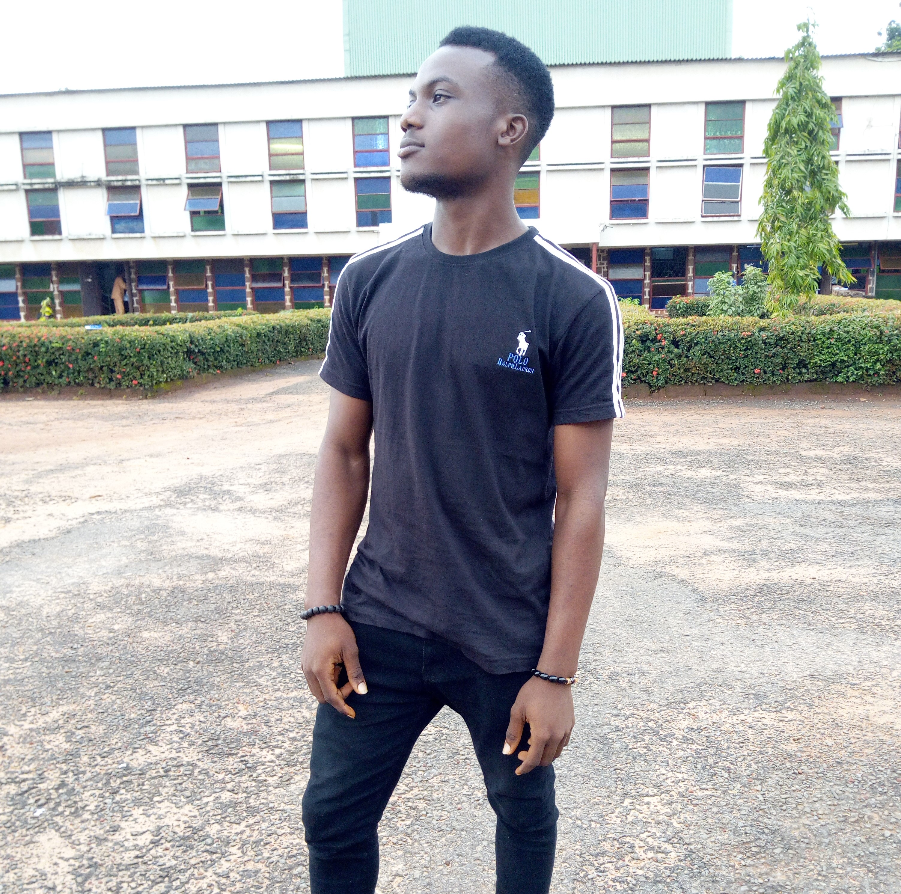

<!-- Start About Area -->
	<section class="about-area section-gap">
		<div class="container">
			<div class="row align-items-center justify-content-between">
				<div class="col-lg-6 about-left">
					
				</div>
				<div class="col-lg-5 col-md-12 about-right">
					<div class="section-title">
						<h2>about myself</h2>
					</div>
					<div class="mb-50 wow fadeIn" data-wow-duration=".8s">
						<p>
							My name is Anthony Daniel. I'm from Rivers, NIgeria living in Lagos. 
						</p>
						<p>I am a ui/ux and product deigner. Initially i started my journey in software as a web designer (html,css,javascript).
							But then i realised i had a flare for design so i went into graphics, mastering (photoshop). And again graphics design
							turned out not to be what i really wanted to do so i started learning mobile Application Development using flutter. Two years later i came across 
							ui-ux design which i dived into without hesitation and since then till date, ui-ux turned out to be my one true love.
						</p>
					</div>
					<a href="#" class="primary-btn white" data-text="More Info">
						<span>M</span>
						<span>o</span>
						<span>r</span>
						<span>e</span>
						<span> </span>
						<span>I</span>
						<span>n</span>
						<span>f</span>
						<span>o</span>
					</a>
					<a href="#" class="primary-btn" data-text="Resume">
						<span>R</span>
						<span>e</span>
						<span>s</span>
						<span>u</span>
						<span>m</span>
						<span>e</span>
					</a>
				</div>
			</div>
		</div>
	</section>
	<!-- End About Area -->
